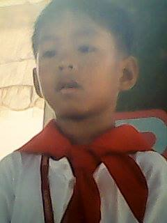
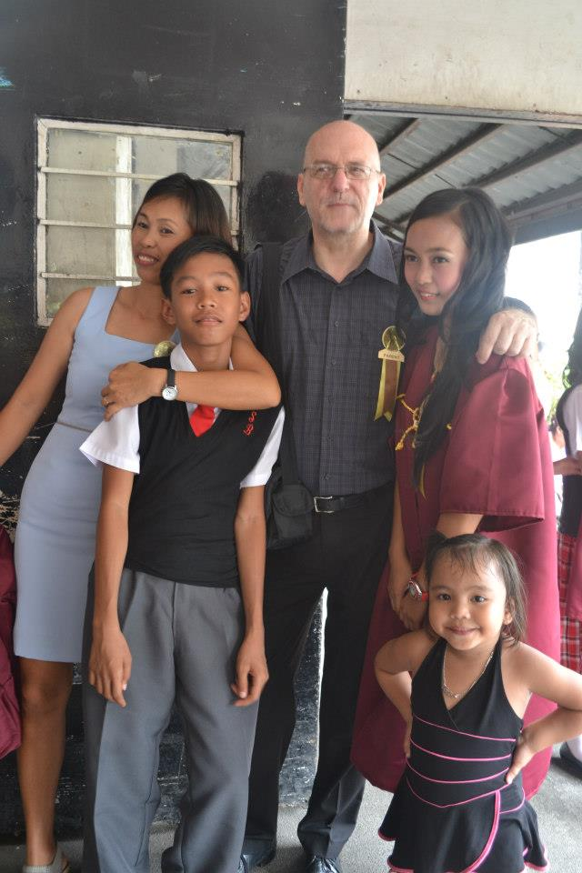

1 Grew up with my mom and my sister here in the province of rizal. 2 My father had to work away from us so we didnt really have that much time but during weekend we got to bond with my family together.3 My father is italian and my mother is filipina and turns out that my mother got strong genes.4 Talking about me, my name is Rigoletto B. Giannoni, a kid who grew up watching tv and playing toys.5 Not really much of a "star" kinda kid.6 I was just an ordinary kid that knows nothing yet in life and literally just being a typical kid.7 I didnt really made a lot of friends.8 Back then I was just a kid that loves being alone.9 Just like playing PSP or Nintendo DS.10 Those what made my childhood.11 A lot of cartoon, anime and games.12 I remember when I get along with the other kids.13 It didn't turned out bad. 14 Yeah there were times I fight with the other kids for maybe bullying me or sometimes I am just a cry baby that wanna play with them.15 I had a great childhood too.16 Even though I was kinda wimp or what.17 I got my family then.18 We got to go to different places like EK or star city.19 Those were my favorite places when I was a kid.20 I could say that I had a great childhood too.21 I still did have my parents and my friends to be with at the end of the day.
1 During my teenage years i got to meet a lot people.2 Met good and bad friends. 3 This the time where i finally get into stuffs. 4 Socializing with people.5 Joining activities.6 Playing sports, i even got myself into a varsity player.7 This also the time I experienced "puppy love".8 I was still the same guy, still an average person but this time socializing with people now.9 This where I actually had real good friends to bond with.10 Met a lot of people but as time passes by, you will realize not everyone is your friend.11 You gotta have a cricle, that youu actually know that are real to you.12 Being a teenager is fun until you know it.13 At this time, I was thought or yet thought myself to enjoy my teenage years without abusing it and knowing where not to cross the line.14 I've been in different places, rizal and laguna.15 Had my JHS in rizal then I got to transfered to laguna for my SHS.16 Remembering back then during my JHS, just like what I told, I was just an average guy.17 Then when that time I got to be transferred I felt like I was a different guy.18 That I start to have awards for my excellency during that period of time.19 I was really proud of it. 20 That I thought, I am just an average student but hey, I did that.21 That would be one of my memorable time in my teenage years.


1 At this stage, I entered my college very nervous.2 Im kind of province guy, not saying that im just a new guy in manila but it was a new atmosphere to me.3 That i had to be away in my hometown that actually made me homesick.4 This was really new to me.5 That the fun days are near over.6 That this is no longer high school cause it's more of "what you see is what you get".7 Studying is the number 1 priority here now and I'll be honest that i got troubles studying too.8 That I knew bigger challenges are on the road.9 In the other hand, there was still fun.10 Just like what I've been hearing to others to enjoy college, so I did.11 Hanging out with people I dont really know that I only knew them because they were my classmate and it turned out fine with me. 12 I thought that it wouldnt hurt at least to get to know new people.13 Yes, college is tough so I told myself i gotta get thought it to achieve my goals in life.14 Then it all changed, all the fun times in college was gone because of pandemic.15 From face to face class to online class. It has been tougher and very different.16 As much as I do I'm trying to embrace because it was really been tough for me. 17 I had troubles dealing with my studies that sometimes I felt like stopping.18 Then something hit me. 19 I should be grateful that I am still studying.20 There's a lot of people out there badly want to study too.21 I always remind myself to always be grateful and that everything will be alright.